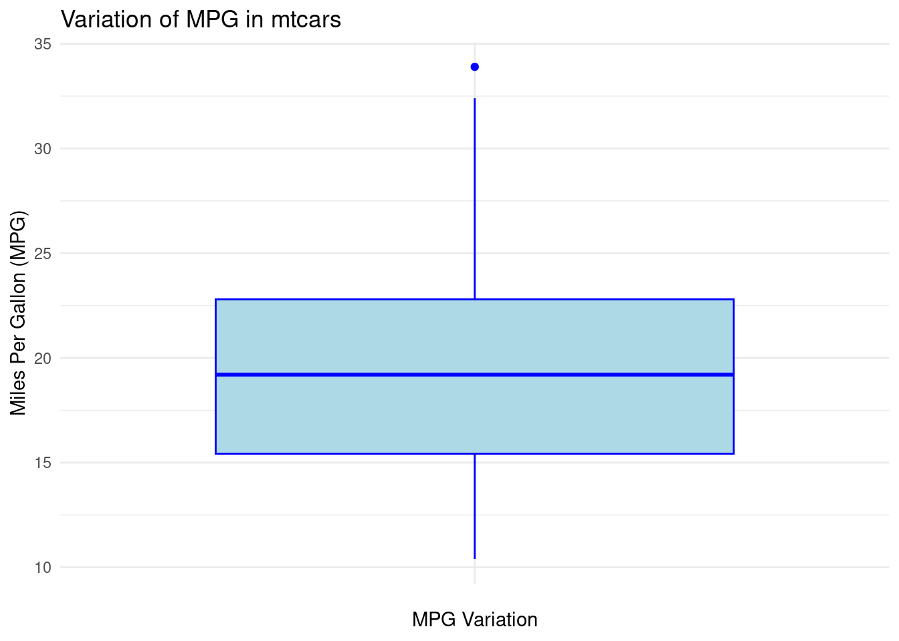

Big 3 Results
Ben Gonzalez
2023-10-19
Statistical Significance - Confidence Intervals - Effect Size
In this section, we will explore important concepts in statistical significance, focusing on calculating confidence intervals (C.I.) and understanding their interpretation, as well as effect sizes.
Visualization of variation in a data set
# Boxplot of mpg in mtcars
ggplot(mtcars, aes(x = "", y = mpg)) +
geom_boxplot(fill = "lightblue", color = "blue") +
labs(title = "Variation of MPG in mtcars", y = "Miles Per Gallon (MPG)", x = "MPG Variation") +
theme_minimal()
The boxplot for MPG in the mtcars data set visualizes the variation in fuel efficiency across different cars. Here’s what we can interpret from the boxplot:
Median (Center Line): The thick horizontal line in the middle of the box represents the median value of MPG, which is the middle value when all the MPG values are ordered from smallest to largest. This gives us a sense of the “central tendency” or typical value for MPG in this dataset.
Interquartile Range (IQR): The box represents the interquartile range (IQR), which includes the middle 50% of the data. The top and bottom edges of the box represent the third quartile (Q3) and first quartile (Q1), respectively. This range gives us an idea of the spread of the central half of the data.
Whiskers: The lines extending from the box (called whiskers) show the range of values within 1.5 times the IQR from the quartiles. These lines help to visualize the spread of data, excluding outliers.
Outliers: Points that fall outside of the whiskers (typically shown as individual dots) are considered outliers. These are values that are significantly different from the rest of the data. For example, the MPG values for cars with extreme fuel efficiency or inefficiency could appear as outliers in this plot.
Sample Standard Deviation Formula
The sample standard deviation (S) is a measure of the spread of values in a sample and is calculated as:
\[\large S\;=\;\sqrt{\frac{\sum(X\;-\;{\overline{X}})^2}{N\;-1}} \]
N <- length(mtcars$hp)
deviations <- mtcars$hp-mean(mtcars$hp)
s <- deviations^2
m_plus<- sum(s)/(N-1)
sd_plus <- sqrt(m_plus)
print(sd_plus)## [1] 68.56287sqrt((sum((mtcars$hp-mean(mtcars$hp))^2))/(length(mtcars$hp)-1))## [1] 68.56287sd(mtcars$hp)## [1] 68.56287Standard Error Formula
\[\large SE\;\;=\frac{\sigma}{\sqrt{n}} \]
\[ SE\;=Standard\;Error \\ \sigma\;=sample\;standard\;deviation \\ n\;=number\;of\;samples \]
How to calculate the standard error of a sample
The standard error (SE) quantifies the uncertainty of a sample mean estimate. It is calculated using:
#standard deviation/squareroot(n)
# length(mtcars$hp)
# nrow(mtcars)
###Shortcut to calculate the standard error of a sample
###The length function is utilized to find the number of observations in a data set
sd(mtcars$hp)/sqrt(length(mtcars$hp))## [1] 12.12032####Another shortcut to calculate the standard error of a sample
###The nrow function is utilized to find the number of observations in a data set
sd(mtcars$hp)/sqrt(nrow(mtcars))## [1] 12.12032####Long way to calculate the standard error of a sample
print(sqrt(sum((mtcars$hp - mean(mtcars$hp)) ^ 2/(length(mtcars$hp) - 1)))
/sqrt(length(mtcars$hp)))## [1] 12.12032Computing Confidence Intervals
Confidence Interval Formula
The confidence interval (C.I.) according to (Hatcher, 2013) gives us a range of values for the population parameter being estimated.
Computed for:
- mean
- difference between means
- correlation coefficients
- etc.
The formula for calculating the confidence interval of the sample mean is:
\[\large CI\;=\;\overline{X}\;\pm\;(SE_{m})(t_{crit}) \]
Lower Bound of the C.I. for a Sample Mean
\[ CI\;=Confidence\;Interval \\ \overline{X}\;=\;observed\;sample\;mean \\ SE_{m}\;=standard\;error\;of\;the\;mean \\ t_{crit}\;=\;the\;critical\;value\;of\;the\;t\;statistic \]
###Calculate the mean of the hp
mean_hp <- mean(mtcars$hp)
print(paste0("Mean of horsepower: ",mean_hp))## [1] "Mean of horsepower: 146.6875"###Calculate the sd of the hp
sd_hp <- sd(mtcars$hp)
print(paste0("Standard deviation of horsepoweer: ",sd_hp))## [1] "Standard deviation of horsepoweer: 68.5628684893206"###Calculate the square root of the hp
n<- sqrt(length(mtcars$hp))
print(n)## [1] 5.656854### Degrees of freedom (df) for t-distribution
df <- length(mtcars$hp) - 1 # 32 observations, so df = 32 - 1 = 31
###Confidence level of 0.95% e.g. two-tailed with 2.5%
t_value <- 1.96
###How to calculate the t-value properly
###Take the p-value: 0.05 and the degrees of freedom: 32-1
tval <- abs(qt( (1-0.95) / 2, df = df))
print(paste0("t-critical value: ",tval))## [1] "t-critical value: 2.03951344639641"###Standard error of the sample mean
se_sample_mean <- (sd(mtcars$hp)/sqrt(length(mtcars$hp)))
print(paste0("Standard Error of the Sample Mean: ",se_sample_mean))## [1] "Standard Error of the Sample Mean: 12.1203173116"sd(mtcars$hp)/sqrt(length(mtcars$hp))## [1] 12.12032ci_lower_bound <-mean(mtcars$hp)-(se_sample_mean*tval)
print(ci_lower_bound)## [1] 121.9679Upper Bound of the C.I. for a Sample Mean
ci_upper_bound<- mean(mtcars$hp)+(se_sample_mean*tval)
print(ci_upper_bound)## [1] 171.4071Vizualization of C.I. using HP from the Mtcars data set
# Calculate the mean and confidence interval
mean_val <- mean(mtcars$hp)
ci_lower <- mean(mtcars$hp)-(se_sample_mean*tval)
ci_upper <- mean(mtcars$hp)+(se_sample_mean*tval)
# Plot with shaded confidence interval and hp points
ggplot(mtcars, aes(x = hp)) +
geom_density(fill = "lightblue", alpha = 0.5) + # Density plot
geom_vline(xintercept = mean_val, color = "red", linetype = "dashed") + # Mean line
geom_vline(xintercept = ci_lower, color = "blue", linetype = "dashed") + # Lower CI line
geom_vline(xintercept = ci_upper, color = "blue", linetype = "dashed") + # Upper CI line
geom_point(aes(x = hp, y = rep(0, length(`hp`))), color = "darkgrey", alpha = 0.5) + # Points
theme_minimal() +
labs(title = "Density Plot with Confidence Interval and HP Points")
C.I. calculation utilizing the linear model formula in R
Here we can also calculate the \(CI\) by utilizing the linear model funciton.
mean(mtcars$hp)+(1.96*12.1203)## [1] 170.4433# Calculate the mean and standard error
l.model <- lm(hp ~ 1, mtcars)
summary(l.model)##
## Call:
## lm(formula = hp ~ 1, data = mtcars)
##
## Residuals:
## Min 1Q Median 3Q Max
## -94.69 -50.19 -23.69 33.31 188.31
##
## Coefficients:
## Estimate Std. Error t value Pr(>|t|)
## (Intercept) 146.69 12.12 12.1 2.79e-13 ***
## ---
## Signif. codes: 0 '***' 0.001 '**' 0.01 '*' 0.05 '.' 0.1 ' ' 1
##
## Residual standard error: 68.56 on 31 degrees of freedom# Calculate the confidence interval
confint(l.model, level=0.95)## 2.5 % 97.5 %
## (Intercept) 121.9679 171.4071Statistical Significance - t-test Example
A t-test is used to determine if there is a significant difference
between the means of two groups. In this example, we will compare the
miles per gallon (mpg) of cars with automatic vs. manual
transmissions in the mtcars dataset.
Hypothesis
- Null hypothesis (H₀): There is no significant difference in the mpg of cars with automatic and manual transmissions.
- Alternative hypothesis (H₁): There is a significant difference in the mpg of cars with automatic and manual transmissions.
We will perform an independent t-test to test these hypotheses.
t-test Code
# Load necessary libraries
library(dplyr)
# Create a new variable 'am' for automatic (0) vs. manual (1) transmissions
mtcars$am <- factor(mtcars$am, levels = c(0, 1), labels = c("Automatic", "Manual"))
# Perform t-test to compare mpg between automatic and manual cars
t_test_result <- t.test(mpg ~ am, data = mtcars)
# Display the t-test result
t_test_result##
## Welch Two Sample t-test
##
## data: mpg by am
## t = -3.7671, df = 18.332, p-value = 0.001374
## alternative hypothesis: true difference in means between group Automatic and group Manual is not equal to 0
## 95 percent confidence interval:
## -11.280194 -3.209684
## sample estimates:
## mean in group Automatic mean in group Manual
## 17.14737 24.39231References
Hatcher, L. (2013). Advanced statistics in research: Reading, understanding, and writing up data analysis results. Shadow Finch Media.
https://www.statology.org/t-distribution-table/
https://www.scribbr.com/frequently-asked-questions/critical-value-of-t-in-r/#:~:text=You%20can%20use%20the%20qt,the%20significance%20level%20by%20two.

 ™
™